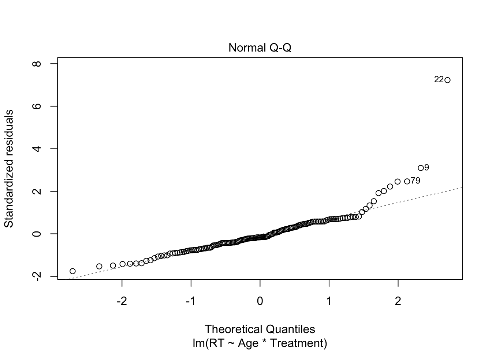

##
## Call:
## lm(formula = RT ~ Age * Treatment, data = FullRTSet)
##
## Residuals:
## Min 1Q Median 3Q Max
## -8.235 -2.567 -0.774 2.211 33.773
##
## Coefficients:
## Estimate Std. Error t value Pr(>|t|)
## (Intercept) 10.674104 1.855415 5.753 5.13e-08 ***
## Age -0.014723 0.064049 -0.230 0.8185
## TreatmentDepletion -5.055791 2.675636 -1.890 0.0608 .
## TreatmentInteraction -5.335375 2.648238 -2.015 0.0458 *
## TreatmentMWR -4.177940 2.849864 -1.466 0.1448
## Age:TreatmentDepletion 0.130076 0.091406 1.423 0.1569
## Age:TreatmentInteraction 0.073794 0.089485 0.825 0.4109
## Age:TreatmentMWR 0.005886 0.103262 0.057 0.9546
## ---
## Signif. codes: 0 '***' 0.001 '**' 0.01 '*' 0.05 '.' 0.1 ' ' 1
##
## Residual standard error: 4.759 on 143 degrees of freedom
## (3 observations deleted due to missingness)
## Multiple R-squared: 0.1253, Adjusted R-squared: 0.08249
## F-statistic: 2.926 on 7 and 143 DF, p-value: 0.006825Interpreting the results we can see that the average response time in the Baseline Treatment with a predicted age of zero is 10.674 seconds. For each additional year, the response time decreases by -0.014. In the Depletion Treatment, the expected response time decreases by 5.055 seconds, the Interaction Treatment by -5.335, and MWR by 4.177 seconds. This is surprising considering the intuition that people who have a depleted ego might be slower to respond, however, baseline is clearly the highest response time. There is a significant effect seen in the Interaction Treatment with a p-value of 0.0458. From this we can conclude that the effect of the Interaction Treatment alone has a significant impact on response time. Note however that the Depletion Treatment has a p-value of 0.0608, indicating a strong directional effect, though insignificant at the 5% level.
Moving onto the interactions, there were no significant results between age and the treatment conditions for response time. The greatest effect is in the age and depletion treatment with a p-value of 0.1569, however, it doesn’t reach a threshold that would allow us to state with confidence that there is an interaction between the two variables.

Looking at the supplemental graphs, the residual vs. fitted graph indicates there isn’t non-linear relationship that could have been missed by the initial analysis. The data points are approximately normally distributed as evidenced by the Normal Q-Q graph. However, this is where the outlier discussed earlier appears as plot number 22, which deviates a great deal. The scale-location plot does reveal some clustering along the range of predictors, however, the horizontal line indicates a generally equal variance. The residuals vs. leverage graph shows that while data point twenty-two is extreme, it isn’t influential enough to be in the region of Cook’s distance.
Below the data is analyzed with the assumption that the effect of age is the same regardless of the condition.
##
## Call:
## lm(formula = RT ~ Age + Treatment, data = FullRTSet)
##
## Residuals:
## Min 1Q Median 3Q Max
## -8.054 -2.565 -0.674 2.217 34.189
##
## Coefficients:
## Estimate Std. Error t value Pr(>|t|)
## (Intercept) 9.17862 1.17192 7.832 9.04e-13 ***
## Age 0.04205 0.03351 1.255 0.211610
## TreatmentDepletion -1.56981 1.08329 -1.449 0.149451
## TreatmentInteraction -3.37273 1.10561 -3.051 0.002714 **
## TreatmentMWR -3.95191 1.09096 -3.622 0.000402 ***
## ---
## Signif. codes: 0 '***' 0.001 '**' 0.01 '*' 0.05 '.' 0.1 ' ' 1
##
## Residual standard error: 4.751 on 146 degrees of freedom
## (3 observations deleted due to missingness)
## Multiple R-squared: 0.1099, Adjusted R-squared: 0.08552
## F-statistic: 4.507 on 4 and 146 DF, p-value: 0.001838The predicted response time in the Baseline Treatment with a predicted age of zero is 9.179 seconds. With each added year there is a .042 increase in response time in the Baseline Treatment. While there is a decrease in predicted response time by 1.57 seconds, it fails to reach significance (p-value = .15) There are, however, statistically significant results in the Interaction and Moral Wiggle Room Treatments with p-values of .002 and .0004 respectively. From this we can conclude that in the Interaction Treatment, response time is predicted to decrease by 3.372 seconds and 3.952 seconds in the Moral Wiggle Room Treatments.
Comparing the outputs to the graphs above, there is little change. However, there is slightly less clustering in the residuals vs. fitted and the scale-location data points.